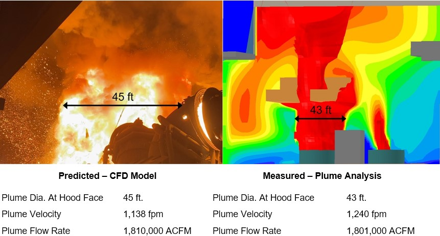

Work Experience
My history of internships

Gas Cleaning Technologies (Process Engineer Intern, Summer 2023)
While working for Gas Cleaning Technologies, I was leading a project in optimizing a steel plant's air pollution control system. My work involved conducting CFD modeling using ANSYS and Phoenics, as well as data and pressure loss modeling. These efforts led to recommendations that resulted in significant improvement in emission capture efficiency. Additionally, I contributed to the company's business development through research in sustainable and smart infrastructure technologies, specifically focusing on AI and hydrogen applications in hard-to-abate industries.